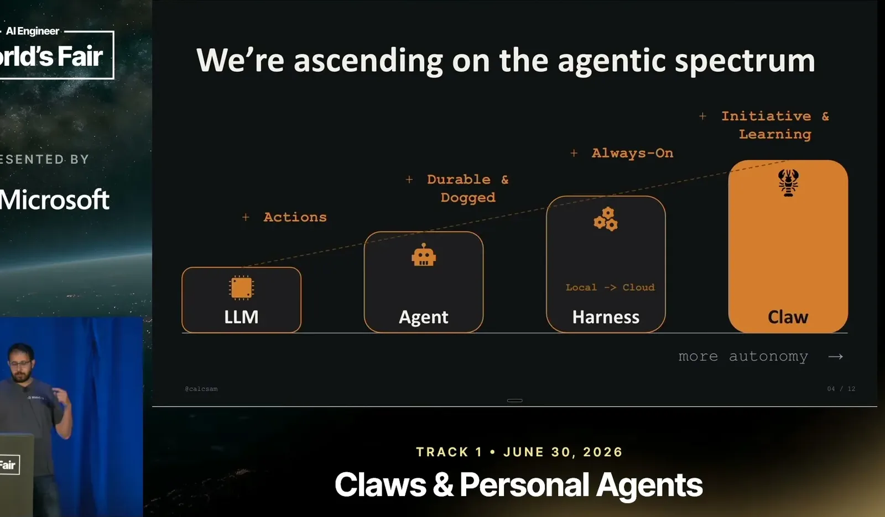
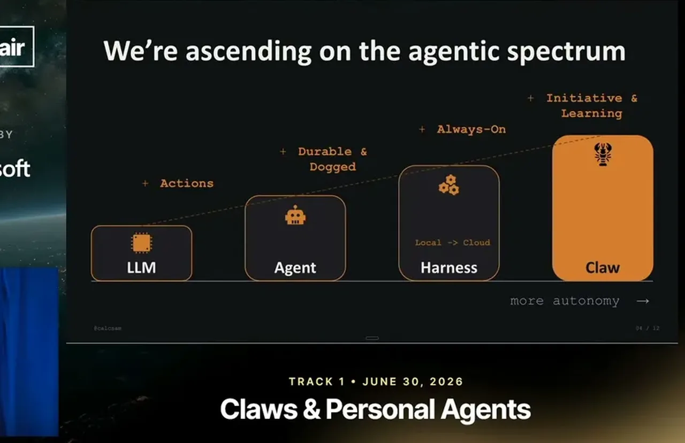
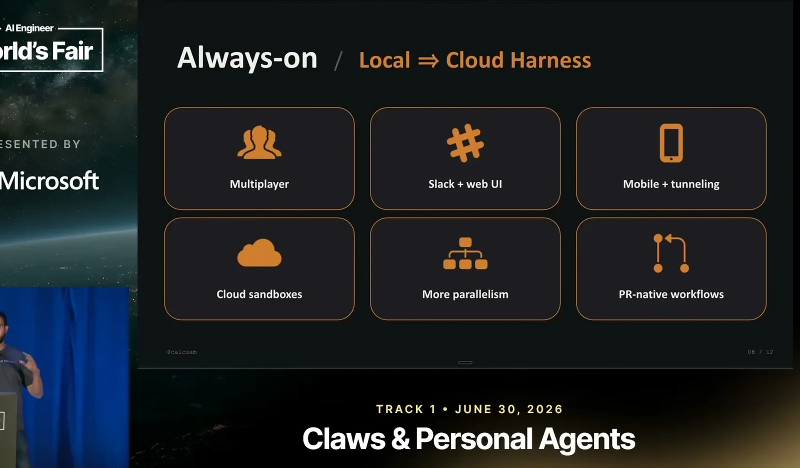
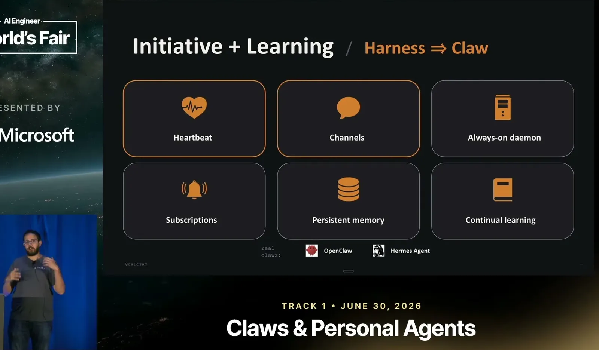
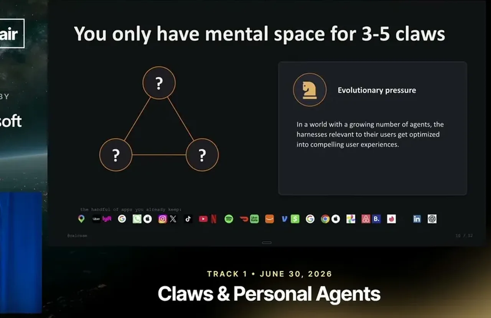

The speaker defines an agent by the agent loop: tool calls, memory, retrying failed tasks, and context engineering. A harness adds durability and doggedness on top, meaning the system can run for hours or days rather than minutes, with features like persisted streams, planning mode, parallel sub-agents, and session-long tool approval.
“It's the agent loop, its tool calls, its memory, it's the ability to retry failed tasks, it's context engineering.”
▶ watch at 02:35“durability just the sheer quality of like being able to run not for minutes but for hours or days”
▶ watch at 03:06
Over roughly the last three months, harnesses have shifted from running locally to running always-on in the cloud, reachable via Slack or a mobile app, running in cloud sandboxes for more parallelism, and producing PRs pushed to GitHub instead of local code.
“this movement from a local harness to a cloud harness where the harness is always on”
▶ watch at 05:12
The next transition imbues harnesses with initiative (proactively messaging the user, listening to external feeds, running on a heartbeat) and continual learning, where the system improves itself from its own traces, for example through automatic skill generation.
“the harness to claw transition is, which is imbuing these agents, imbuing these harnesses with initiative and and learning”
▶ watch at 06:46
The speaker names 'Steinberger's law': every harness will expand until it becomes a claw, driven by users wanting to message agents and get a dopamine hit from turning tokens into output. He draws an analogy to 2010s mobile app platforms, where despite many use-case categories, consumer attention settled on only one or two winning apps per category, and argues the same shakeout is coming for agent claws.
“I've called this Steinberger's law, which is I I believe every harness”
▶ watch at 09:20“you only really have space in your brain for like a limited number of things”
▶ watch at 12:00“there will be this very real shakeout and and these categories will kind of emerge and we'll realize that we only have space in our lives for so many of these claws”
▶ watch at 13:01
The practical takeaway is that agent builders should ensure their product has the capabilities users need now, because users will switch to more powerful alternatives quickly as the category shakes out, and that this shakeout pattern is expected to repeat again later in the decade.
“make sure that it has the capabilities that your users need because if it doesn't and if there's newer things that come out, like they may just, you know, pick pick something that's more powerful”
▶ watch at 14:03
(ours) The mobile-app-platform analogy is doing most of the predictive work here and is asserted rather than evidenced with agent-specific data; it's a plausible frame but worth treating as a hypothesis rather than an established pattern for agent products specifically.
| Stance | Claim | t |
|---|---|---|
| asserts | Durability is the quality of an agent being able to run for hours or days instead of minutes. | 03:06 |
| asserts | Over the last few months there has been a shift from local harnesses to always-on cloud harnesses. | 05:12 |
| asserts | The transition from harness to claw means imbuing harnesses with initiative and continual learning. | 06:46 |
| predicts | Every harness will keep expanding in capability until it becomes a claw. | 09:20 |
| predicts | There will be a shakeout where only a limited number of agent claws survive per category, similar to mobile app platforms. | 13:01 |
| asserts | Consumers only have room in their attention for a limited number of products in each use-case category. | 12:00 |
| recommends | Agent builders should make sure their product has the capabilities users need, or users will switch to more powerful alternatives. | 14:03 |
| asserts | An agent is defined by the agent loop: tool calls, memory, retrying failed tasks, and context engineering. | 02:35 |
Machine-readable copy embedded in this page (script#ontology) and in the corpus ontology.